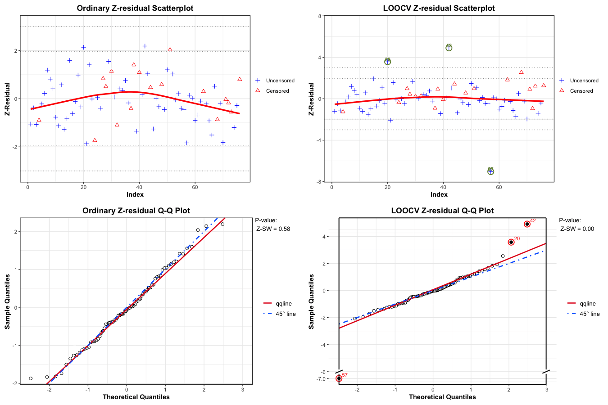
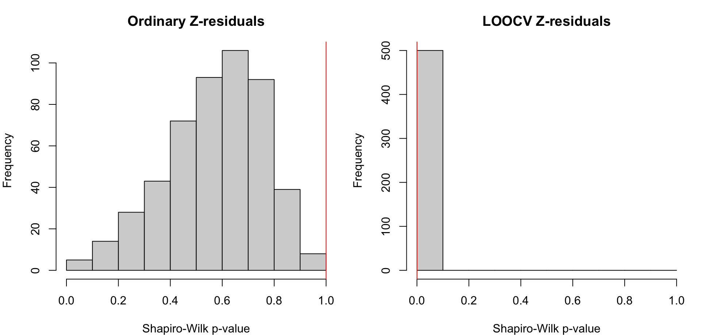

Code
if (!requireNamespace("Zresidual", quietly = TRUE)) {
if (!requireNamespace("remotes", quietly = TRUE)) install.packages("remotes")
remotes::install_github("tiw150/Zresidual", upgrade = "never", dependencies = TRUE)
}Examples of Cross-validatory Z-Residual
Source:vignettes/articles/demo_coxph_frailty.qmd
Installing Zresidual and Required Packages
if (!requireNamespace("Zresidual", quietly = TRUE)) {
if (!requireNamespace("remotes", quietly = TRUE)) install.packages("remotes")
remotes::install_github("tiw150/Zresidual", upgrade = "never", dependencies = TRUE)
}This vignette explains how to use the Zresidual package to calculate cross-validatory (CV) Z-residuals based on the output of the coxph function from the survival package in R. It also serves as a demonstration of how to use cross-validatory Z-residuals to identify outliers in semi-parametric shared frailty models. To fully understand the detailed definitions and the example data analysis results, please refer to the original paper titled “Cross-validatory Z-Residual for Diagnosing Shared Frailty Models”.
We use Z-residual to diagnose shared frailty models in a Cox proportional hazard setting with a baseline function unspecified. Suppose there are g groups of individuals, with each group containing n_i individuals, indexed as i = 1, 2, , g in the case of clustered failure survival data. Let y_{ij} be a possibly right-censored observation for the jth individual from the ith group, and \delta_{ij} be the indicator for being uncensored. The normalized randomized survival probabilities (RSPs) for y_{ij} in the shared frailty model is defined as:
S_{ij}^{R}(y_{ij}, \delta_{ij}, U_{ij}) = \left\{ \begin{array}{rl} S_{ij}(y_{ij}), & \text{if $y_{ij}$ is uncensored, i.e., $\delta_{ij}=1$,}\\ U_{ij}\,S_{ij}(y_{ij}), & \text{if $y_{ij}$ is censored, i.e., $\delta_{ij}=0$,} \end{array} \right. \tag{1}
where U_{ij} is a uniform random number on (0, 1), and S_{ij}(\cdot) is the postulated survival function for t_{ij} given x_{ij}. S_{ij}^{R}(y_{ij}, \delta_{ij}, U_{ij}) is a random number between 0 and S_{ij}(y_{ij}) when y_{ij} is censored. It is proved that the RSPs are uniformly distributed on (0,1) given x_{i} under the true model. Therefore, the RSPs can be transformed into residuals with any desired distribution. We prefer to transform them with the normal quantile: r_{ij}^{Z}(y_{ij}, \delta_{ij}, U_{ij})=-\Phi^{-1} (S_{ij}^R(y_{ij}, \delta_{ij}, U_{ij})), \tag{2} which is normally distributed under the true model, so that we can conduct model diagnostics with Z-residuals for censored data in the same way as conducting model diagnostics for a normal regression model. There are a few advantages of transforming RSPs into Z-residuals. First, the diagnostics methods for checking normal regression are rich in the literature. Second, transforming RSPs into normal deviates facilitates the identification of extremely small and large RSPs. The frequency of such small RSPs may be too small to be highlighted by the plots of RSPs. However, the presence of such extreme SPs, even very few, is indicative of model misspecification. Normal transformation can highlight such extreme RSPs.
In our study, we employ both leave-one-out cross-validation (LOOCV) and 10-fold cross-validation (10-fold CV) techniques to compute cross-validatory Z-residuals. In LOOCV Z-residual, one observation, t_{ij}^{test}, is excluded from the dataset with n observations. The remaining observations, acting as the training dataset, are used for parameter estimation in the shared frailty model. Fitting the model to the training dataset produces the estimated regression coefficients, \hat{\beta'}, and frailty effects, \hat{z_i}. The Breslow estimator helps estimate the cumulative baseline hazard (\hat{H_0}). The survival function \hat{S}_{ij}(y_{ij}) for the test observation y_{ij}^{test} is computed using: \hat{S}_{ij}(y_{ij}^{test}) = \exp \{- \hat{z_i} \exp(\hat{\beta'} x_{ij}) \hat{H}_0(y_{ij}^{test}) \}. Subsequently, the RSP for the observed t_{ij} is defined as: \hat{S}_{ij}^{R}(t_{ij}^{test}, d_{ij}, U_{ij})= \left\{ \begin{array}{rl} \hat{S}_{ij}(t_{ij}^{test}), & \text{if $t_{ij}^{test}$ is uncensored, i.e., $d_{ij}=1$,}\\ U_{ij}\,\hat{S}_{ij}(t_{ij}^{test}), & \text{if $t_{ij}^{test}$ is censored, i.e., $d_{ij}=0$.} \end{array} \right. \tag{3}
Resulting in the Z-residual for t_{ij}^{test}: \hat{z}_{ij}(t_{ij}^{test}, d_{ij}, U_{ij})=-\Phi^{-1} (\hat{S}_{ij}^R(t_{ij}^{test}, d_{ij}, U_{ij})). \tag{4} By repeating these steps for each observation (n times), a LOOCV predictive Z-residual is calculated for each observation.
For cluster-based or categorical covariate values, specific considerations are employed during the LOOCV and k-fold CV methods. Clusters with only one observation cannot be included in the training dataset, and similar requirements are imposed on categorical covariates. As such, cross-validatory Z-residuals for these observations are designated as NA in the implementation.
This example demonstrates the practical application of cross-validatory Z-residuals in identifying outliers within a study on kidney infections. The dataset comprises records from 38 kidney patients using a portable dialysis machine. It documents the times of the first and second recurrences of kidney infections for these patients. Each patient’s survival time is defined as the duration until infection from catheter insertion. The patient records are considered as clusters due to shared frailty, signifying the common effect across patients. Instances where the catheter is removed for reasons other than infection are treated as censored observations, accounting for 24% of the dataset. The dataset encompasses 38 patient clusters, with each patient having exactly two observations, resulting in a total sample size of 76. This dataset is frequently employed to exemplify shared frailty models.
kidney <- survival::kidney
kidney <- as.data.frame(kidney)
kidney <- stats::na.omit(kidney)
kidney$disease <- as.factor(kidney$disease)| n_observations | n_subjects | n_events | n_censored |
|---|---|---|---|
| 76 | 38 | 58 | 18 |
We fit a shared gamma frailty model with three covariates: covariates: age in years, gender (male or female), and four disease types (0=GN, 1=AN, 2=PKD, 3=Other).
We computed Z-residuals using the No-CV and LOOCV methods for the kidney infection dataset. Given the similarity in performance between the 10-fold CV and LOOCV Z-residual methods demonstrated in the simulation studies and the manageable computational load, we focused on the LOOCV method.
nrep_demo <- 500
Zresid.kidney <- Zresidual(
fit = fit_kidney,
data = kidney,
nrep = nrep_demo
)
Zresid.kidney.info <- attr(
Zresid.kidney,
"zcov"
)
CVZresid.kidney <- Zresidual_CV(
object = fit_kidney,
data = kidney,
nrep = nrep_demo,
nfolds = nrow(kidney),
seed = 123
)Warning in coxpenal.fit(X, Y, istrat, offset, init = init, control, weights =
weights, : Inner loop failed to coverge for iterations 2
# Use the fold-specific linear predictors and metadata produced by
# Zresidual_CV(), rather than metadata from the full-data model.
CVZresid.kidney.info <- attr(
CVZresid.kidney,
"zcov"
)The first and second columns of Figure 1 display scatterplots against the index and QQ plots of the Z-residuals calculated with the No-CV and LOOCV methods. The No-CV Z-residuals predominantly fall within the range of -3 to 3, displaying alignment with the 45^\circ straight line in the QQ plot. The QQ plot of the No-CV Z-residuals indicates a SW p-value of around 0.70, signifying a well-fitted model to the dataset. Thus, the diagnostic results using No-CV Z-residuals suggest the suitability of the shared frailty model for the dataset without identifying any outliers. However, analysis of the scatterplot of LOOCV Z-residuals reveals that the Z-residuals of cases labeled 20 and 42 exceed 3. These instances are considered outliers for the shared frailty model. The QQ plot of LOOCV Z-residuals displays a noticeable deviation from the 45^\circ straight line, attributed to the considerable Z-residuals of the two identified outliers. The SW p-value of LOOCV Z-residuals is notably small, measuring less than 0.01, as evident in the QQ plot. In summary, the diagnosis results with LOOCV Z-residuals suggest that the fitted shared frailty model is inadequate for this dataset, and two cases exhibit excessive Z-residuals, categorized as outliers for this model.
kindy_combined_path <- file.path(
resources_path,
"kindy_combined_anim_v2.gif"
)
if (force_rerun || !file.exists(kindy_combined_path)) {
capture_zplot <- function(expr) {
tmp <- tempfile(fileext = ".pdf")
grDevices::pdf(tmp)
on.exit({
grDevices::dev.off()
unlink(tmp)
}, add = TRUE)
force(expr)
}
frame_dir <- tempfile("kindy_combined_frames_")
dir.create(frame_dir)
frame_files <- file.path(
frame_dir,
sprintf("frame_%02d.png", 1:10)
)
for (i in 1:10) {
scatter_ordinary <- capture_zplot(
plot(
Zresid.kidney,
zcov = Zresid.kidney.info,
x_axis_var = "index",
main.title = "Ordinary Z-residual Scatterplot",
outlier.return = TRUE,
irep = i,
add_lowess = TRUE
)
)
scatter_loocv <- capture_zplot(
plot(
CVZresid.kidney,
zcov = CVZresid.kidney.info,
x_axis_var = "index",
main.title = "LOOCV Z-residual Scatterplot",
outlier.return = TRUE,
irep = i,
add_lowess = TRUE
)
)
qq_ordinary <- capture_zplot(
qqnorm(
Zresid.kidney,
zcov = Zresid.kidney.info,
main.title = "Ordinary Z-residual Q-Q Plot",
irep = i
)
)$plots[[1]]
qq_loocv <- capture_zplot(
qqnorm(
CVZresid.kidney,
zcov = CVZresid.kidney.info,
main.title = "LOOCV Z-residual Q-Q Plot",
irep = i
)
)$plots[[1]]
grDevices::png(
filename = frame_files[i],
width = 1350,
height = 900,
res = 96
)
tryCatch(
{
gridExtra::grid.arrange(
grobs = list(
scatter_ordinary,
scatter_loocv,
qq_ordinary,
qq_loocv
),
ncol = 2
)
},
finally = {
grDevices::dev.off()
}
)
}
unlink(
kindy_combined_path,
force = TRUE
)
gifski::gifski(
png_files = frame_files,
gif_file = kindy_combined_path,
width = 1350,
height = 900,
delay = 1,
loop = TRUE
)
unlink(
frame_dir,
recursive = TRUE,
force = TRUE
)
}
knitr::include_graphics(kindy_combined_path)
The Shapiro-Wilk (SW) or Shapiro-Francia (SF) normality tests applied to Z-residuals can be used to numerically test the overall GOF of the model.
sw.kidney <- sw.test.zresid(Zresid.kidney)
sw.kidney.cv <- sw.test.zresid(CVZresid.kidney)
sf.kidney <- sf_test.zresid(Zresid.kidney)
sf.kidney.cv <- sf_test.zresid(CVZresid.kidney)
statistic_tests <- data.frame(
`Z-SW` = sw.kidney,
`Z-SF` = sf.kidney,
`CV Z-SW` = sw.kidney.cv,
`CV Z-SF` = sf.kidney.cv,
check.names = FALSE
)
knitr::kable(
head(statistic_tests, 10),
digits = 4,
caption = "Summary of residual tests"
)| Z-SW | Z-SF | CV Z-SW | CV Z-SF |
|---|---|---|---|
| 0.5788 | 0.7830 | 0 | 0 |
| 0.4705 | 0.6805 | 0 | 0 |
| 0.7167 | 0.8367 | 0 | 0 |
| 0.6365 | 0.7150 | 0 | 0 |
| 0.6220 | 0.7831 | 0 | 0 |
| 0.5420 | 0.7240 | 0 | 0 |
| 0.5124 | 0.6507 | 0 | 0 |
| 0.6265 | 0.7468 | 0 | 0 |
| 0.3381 | 0.5278 | 0 | 0 |
| 0.8083 | 0.8620 | 0 | 0 |
There exists randomness in the Z-residuals of censored observations, meaning that different sets of Z-residuals can be generated for the same dataset using distinct random numbers. Thus, to test the robustness of the previously conducted diagnosis, we replicated a large number of realizations of Z-residuals. Figure 2 exhibits histograms of 500 SW test p-values, each derived from a set of No-CV or LOOCV Z-residuals. More than 95% of the SW p-values for No-CV Z-residuals surpass 0.05, whereas 100% of the SW p-values for LOOCV Z-residuals fall below 0.05. This consistency across numerous replications confirms that the evaluation of the misspecification of the shared frailty model is not incidental to a specific set of LOOCV Z-residuals but a recurring conclusion supported by extensive Z-residual replications.
| method | p_value_upper_bound |
|---|---|
| Ordinary Z-residual | 1 |
| LOOCV Z-residual | 0 |
par(mfrow = c(1, 2), mar = c(4, 4, 3, 1))
hist(
sw.kidney,
breaks = seq(0, 1, by = 0.1),
main = "Ordinary Z-residuals",
xlab = "Shapiro-Wilk p-value",
xlim = c(0, 1)
)
abline(v = med_pval_sw_nocv, col = "red")
hist(
sw.kidney.cv,
breaks = seq(0, 1, by = 0.1),
main = "LOOCV Z-residuals",
xlab = "Shapiro-Wilk p-value",
xlim = c(0, 1)
)
abline(v = med_pval_sw_loocv, col = "red")
Wu, T., Feng, C., & Li, L. (2024). Cross-Validatory Z-Residual for Diagnosing Shared Frailty Models. The American Statistician, 79(2), 198–211. https://doi.org/10.1080/00031305.2024.2421370